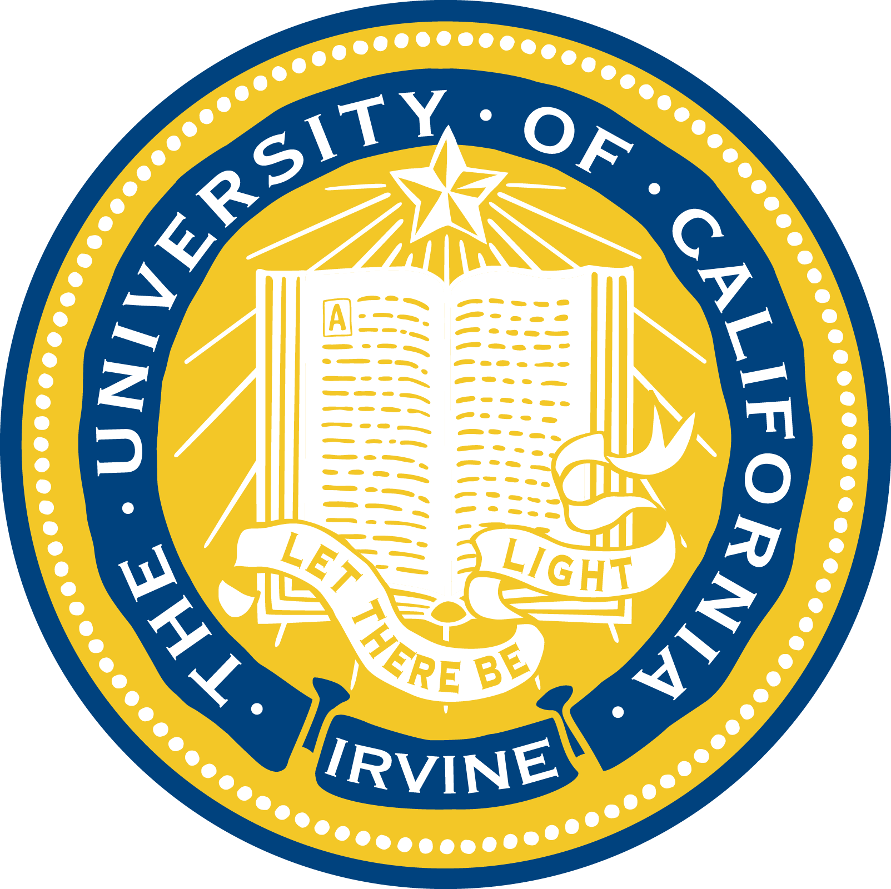

EDUCATION
Orange Coast College
Year: 2013-2015
AS Degree in Computer Science
Relevant Courses:
Computer Architecture and Organization
Data Structure
Software Engineering
Linear Algebra
Statistics and Data Analysis

University of California, Irvine
Year: 2015-2018
BS Degree in Computer Science
Relevant Courses:
Programming Concept
Computer Networks
Human Computer Interaction
Design and Analysis of Algorithm
Software Engineering
inear Algebra
Statistics and Data Analysis